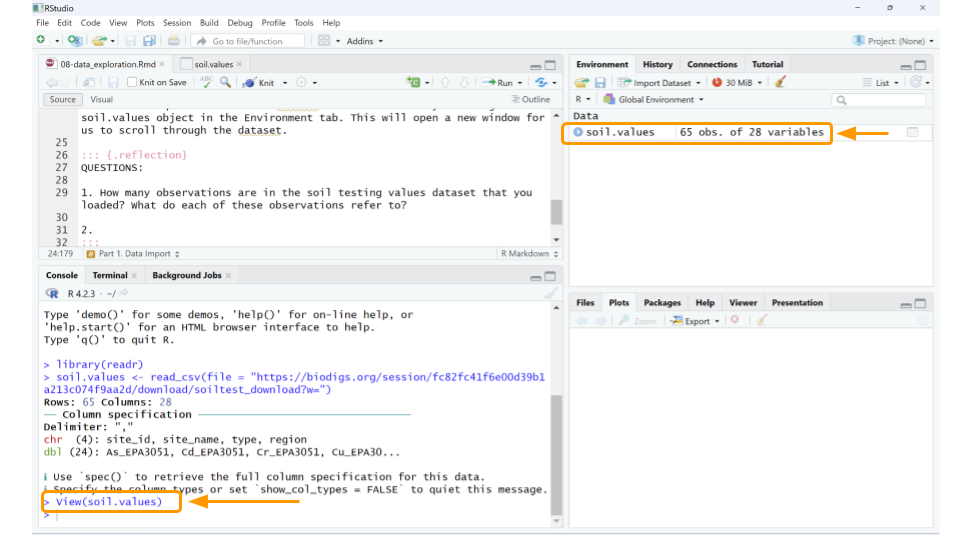
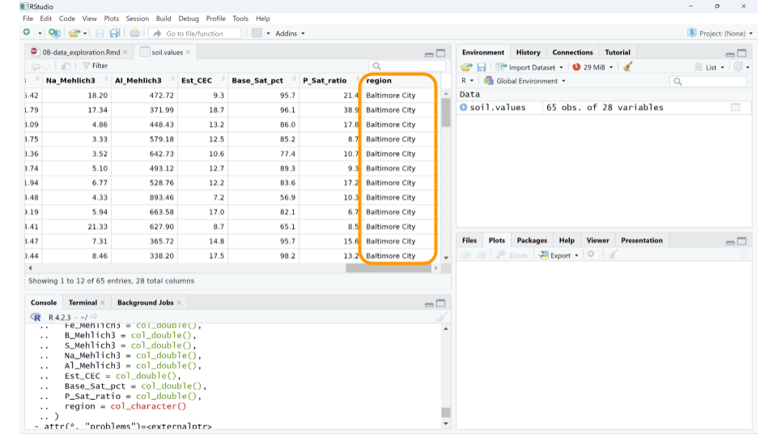
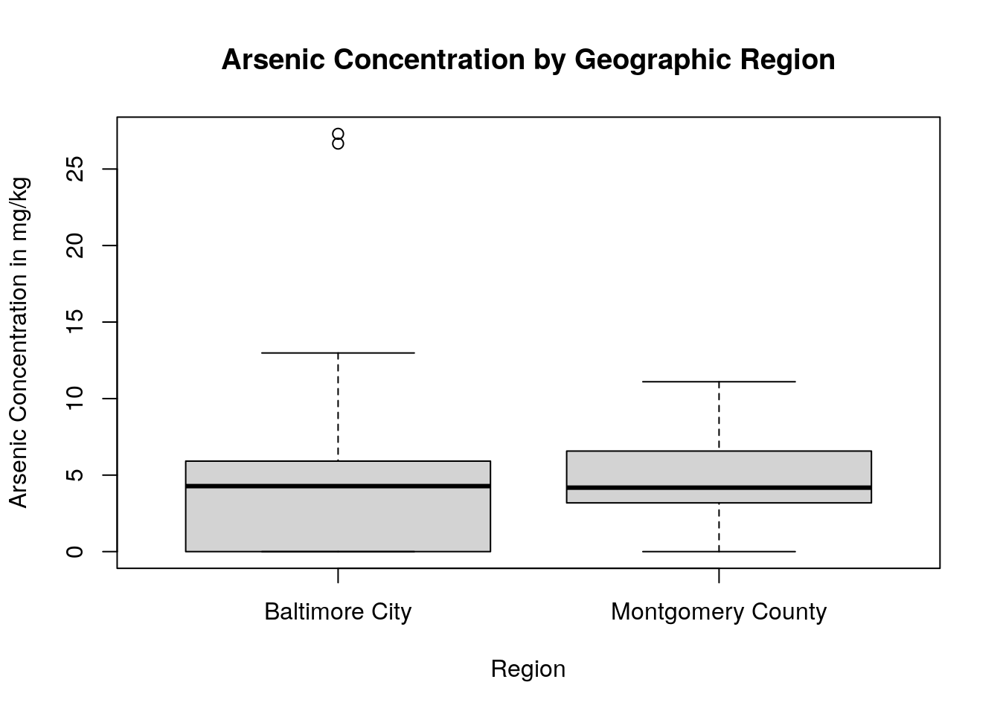

Chapter 13 Exploring Soil Testing Data With R
In this activity, you’ll have a chance to become familiar with the BioDIGS soil testing data. This dataset includes information on the inorganic components of each soil sample, particularly metal concentrations. Human activity can increase the concentration of inorganic compounds in the soil. When cars drive on roads, compounds from the exhaust, oil, and other fluids might settle onto the roads and be washed into the soil. When we put salt on roads, parking lots, and sidewalks, the salts themselves will eventually be washed away and enter the ecosystem through both water and soil. Chemicals from factories and other businesses also leech into our environment. All of this means the concentration of heavy metals and other chemicals will vary among the soil samples collected for the BioDIGS project.
13.1 Before You Start
If you do not already have a Google account that you would like to use for accessing Terra, create one now.
If you would like to create a Google account that is associated with your non-Gmail, institutional email address, follow these instructions.
13.2 Objectives
This activity will teach you how to use the AnVIL platform to:
- Import data into RStudio
- Examine a csv file that contains the soil testing data from the BioDIGS project
- Calculate summary statistics for variables in the soil testing data
- Create and interpret histograms and boxplots for variables in the soil testing data
13.3 Part 1. Data Import
We will use the BioDIGS package to retrieve the data. We first need to install the package from where it is stored on GitHub.
Once you’ve installed the package, we can load the library and assign the soil testing data to an object. This command follows the code structure:
dataset_object_name <- stored_BioDIGS_dataset
It seems like the dataset loaded, but it’s always a good idea to verify. There are many ways to check, but the easiest approach (if you’re using RStudio) is to look at the Environment tab on the upper right-hand side of the screen. You should now have an object called soil.values that includes some number of observations for 28 variables. The observations refer to the number of rows in the dataset, while the variables tell you the number of columns. As long as neither the observations or variables are 0, you can be confident that your dataset loaded.
Let’s take a quick look at the dataset. We can do this by clicking on soil.values object in the Environment tab. (Note: this is equivalent to typing View(soil.values) in the R console.)

This will open a new window for us to scroll through the dataset.

Well, the data definitely loaded, but those column names aren’t immediately understandable. What could As_EPA3051 possibly mean? In addition to the dataset, we need to load the data dictionary as well.
Data dictionary: a file containing the names, definitions, and attributes about data in a database or dataset.
In this case, the data dictionary can help us make sense of what sort of values each column represents. The data dictionary for the BioDIGS soil testing data is available in the R package (see code below), but we have also reproduced it here.
- site_id Unique letter and number site name
- full_name Full site name
- As_EPA3051 Arsenic (mg/kg), EPA Method 3051A. Quantities < 3.0 are not detectable.
- Cd_EPA3051 Cadmium (mg/kg), EPA Method 3051A. Quantities < 0.2 are not detectable.
- Cr_EPA3051 Chromium (mg/kg), EPA Method 3051A
- Cu_EPA3051 Copper (mg/kg), EPA Method 3051A
- Ni_EPA3051 Nickel (mg/kg), EPA Method 3051A
- Pb_EPA3051 Lead (mg/kg), EPA Method 3051A
- Zn_EPA3051 Zinc (mg/kg), EPA Method 3051A
- water_pH
- A-E_Buffer_pH
- OM_by_LOI_pct Organic Matter by Loss on Ignition
- P_Mehlich3 Phosphorus (mg/kg), using the Mehlich 3 soil test extractant
- K_Mehlich3 Potassium (mg/kg), using the Mehlich 3 soil test extractant
- Ca_Mehlich3 Calcium (mg/kg), using the Mehlich 3 soil test extractant
- Mg_Mehlich3 Magnesium (mg/kg), using the Mehlich 3 soil test extractant
- Mn_Mehlich3 Manganese (mg/kg), using the Mehlich 3 soil test extractant
- Zn_Mehlich3 Zinc (mg/kg), using the Mehlich 3 soil test extractant
- Cu_Mehlich3 Copper (mg/kg), using the Mehlich 3 soil test extractant
- Fe_Mehlich3 Iron (mg/kg), using the Mehlich 3 soil test extractant
- B_Mehlich3 Boron (mg/kg), using the Mehlich 3 soil test extractant
- S_Mehlich3 Sulfur (mg/kg), using the Mehlich 3 soil test extractant
- Na_Mehlich3 Sodium (mg/kg), using the Mehlich 3 soil test extractant
- Al_Mehlich3 Aluminum (mg/kg), using the Mehlich 3 soil test extractant
- Est_CEC Cation Exchange Capacity (meq/100g) at pH 7.0 (CEC)
- Base_Sat_pct Base saturation (BS). This represents the percentage of CEC occupied by bases (Ca2+, Mg2+, K+, and Na+). The %BS increases with increasing soil pH. The availability of Ca2+, Mg2+, and K+ increases with increasing %BS.
- P_Sat_ratio Phosphorus saturation ratio. This is the ratio between the amount of phosphorus present in the soil and the total capacity of that soil to retain phosphorus. The ability of phosphorus to be bound in the soil is primary a function of iron (Fe) and aluminum (Al) content in that soil.
Using the data dictionary, we find that the values in column As_EPA3051 give us the arsenic concentration in mg/kg of each soil sample, as determined by EPA Method 3051A. While arsenic can occur naturally in soils, higher levels suggest the soil may have been contaminated by mining, hazardous waste, or pesticide application. Arsenic is toxic to humans.
We can also look at just the names of all the columns using the R console using the colnames() command.
## [1] "site_id" "site_name" "type" "As_EPA3051"
## [5] "Cd_EPA3051" "Cr_EPA3051" "Cu_EPA3051" "Ni_EPA3051"
## [9] "Pb_EPA3051" "Zn_EPA3051" "water_pH" "OM_by_LOI_pct"
## [13] "P_Mehlich3" "K_Mehlich3" "Ca_Mehlich3" "Mg_Mehlich3"
## [17] "Mn_Mehlich3" "Zn_Mehlich3" "Cu_Mehlich3" "Fe_Mehlich3"
## [21] "B_Mehlich3" "S_Mehlich3" "Na_Mehlich3" "Al_Mehlich3"
## [25] "Est_CEC" "Base_Sat_pct" "P_Sat_ratio" "region"Most of the column names are found in the data dictionary, but the very last column (“region”) isn’t. How peculiar! Let’s look at what sort of values this particular column contains. The tab with the table of the soil.views object should still be open in the upper left pane of the RStudio window. If not, you can open it again by clicking on soils.view in the Environment pane, or by using the View() command.

If you scroll to the end of the table, we can see that “region” seems to refer to the city or area where the samples were collected. For example, the first 24 samples all come from Baltimore City.

You may notice that some cells in the soil.values table contain NA. This just means that the soil testing data for that sample isn’t available yet. We’ll take care of those values in the next part.
QUESTIONS:
How many observations are in the soil testing values dataset that you loaded? What do each of these observations refer to?
What data is found in the column labeled “Fe_Mehlich3”? Why would we be interested how much of this is in the soil? (You may have to search the internet for this answer.)
13.4 Part 2. Data Summarization
Now that we have the dataset loaded, let’s explore the data in more depth.
First, we should remove those samples that don’t have soil testing data yet. We could keep them in the dataset, but removing them at this stage will make the analysis a little cleaner. In this case, as we know the reason the data are missing (and that reason will not skew our analysis), we can safely remove these samples. This will not be the case for every data analysis.
We can remove the unanalyzed samples using the drop_na() function from the tidyr package. This function removes any rows from a table that contains NA for a particular column. This command follows the code structure:
dataset_new_name <- dataset %>% drop_na(column_name)
The `%>% is called a pipe and it tells R that the commands after it should all be applied to the object in front of it. (In this case, we can filter out all samples missing a value for “As_EPA3051” as a proxy for samples without soil testing data.)
Great! Now let’s calculate some basic statistics. For example, we might want to know what the mean (average) lead concentration is for each soil sample. According to the data dictionary, the values for lead concentration are in the column labeled “Pb_EPA3051”. We can use a combination of two functions: pull() and mean().pull() lets you extract a column from your table for statistical analysis, while mean() calculates the average value for the extracted column.
This command follows the code structure:
OBJECT %>% pull(column_name) %>% mean()
pull() is a command from the tidyverse package, so we’ll need to load that library before our command.
## [1] 5.10875We can run similar commands to calculate the standard deviation, minimum, and maximum for the soil arsenic values.
## [1] 5.606926## [1] 0## [1] 27.3As you can see, the standard deviation of the arsenic concentrations is listed first, then the minimum concentration, and finally the maximum concentration.
The soil testing dataset contains samples from multiple geographic regions, so maybe it’s more meaningful to find out what the average arsenic values are for each region. We have to do a little bit of clever coding trickery for this using the group_by and summarize functions. First, we tell R to split our dataset up by a particular column (in this case, region) using the group_by function, then we tell R to summarize the mean arsenic concentration for each group. Because there are several different functions with the name summarize in R, we have to specify that we want to use summarize from the dplyr package. This command follows the code structure:
dataset %>% group_by(column_name) %>% dplyr::summarize(Mean = mean(column_name))
## # A tibble: 2 × 2
## region Mean
## <chr> <dbl>
## 1 Baltimore City 5.56
## 2 Montgomery County 4.66Now we know that the mean arsenic concentration might be different for each region, and appears higher for the Baltimore City samples than the Montgomery County samples.
QUESTIONS:
What is the mean iron concentration for samples in this dataset? What about the standard deviation, minimum value, and maximum value?
Calculate the mean iron concentration by region. Which region has the highest mean iron concentration? What about the lowest?
13.5 Part 3. Data Visualization
Often, it can be easier to immediately interpret data displayed as a plot than as a list of values. For example, we can more easily understand how the arsenic concentration of the soil samples are distributed if we create histograms compared to looking at point values like mean, standard deviation, minimum, and maximum.
One way to make histograms in R is to use the hist() function. We can again use the pull() command and pipes (%>%) to choose the column we want from the soil.values.clean dataset and make a histogram of them. Remember, this command follows the code structure:
dataset %>% pull(column_name) %>% hist(main = chart_title, xlab = x_axis_title)
In this case, we do not have to use the dplyr::summarize command before hist() because there’s only one function called hist() in the packages we’re using.
soil.values.clean %>%
pull(As_EPA3051) %>%
hist(main = 'Histogram of Arsenic Concentration',
xlab ='Concentration in mg/kg' )
We can see that almost all the soil samples had very low concentrations of arsenic (which is good news for the soil health!). In fact, many of them had arsenic concentrations close to 0, and only one sampling location appears to have high levels of arsenic.
We might also want to graphically compare arsenic concentrations among the geographic regions in our dataset. We can do this by creating boxplots. Boxplots are particularly useful when comparing the mean, variation, and distributions among multiple groups. In R, one way to create a boxplot is using the boxplot() function. We don’t need to use pipes for this command, but instead will specify what columns we want to use from the dataset inside the boxplot() function itself.
This command follows the code structure:
boxplot(arsenic_concentration ~ grouping_variable, data = dataset, main = “Title of Graph”, xlab = “x_axis_title”, ylab = “y_axis_title”)
boxplot(As_EPA3051 ~ region, data = soil.values.clean,
main = "Arsenic Concentration by Geographic Region",
xlab = "Region",
ylab = "Arsenic Concentration in mg/kg")
By using a boxplot, we can quickly see that, while one sampling site within Baltimore City has a very high concentration of arsenic in the soil, in general there isn’t a difference in arsenic content between Baltimore City and Montgomery County.
QUESTIONS:
Create a histogram for iron concentration, as well as a boxplot comparing iron concentration by region. Is the iron concentration similar among regions? Are there any outlier sites with unusually high or low iron concentrations?
Create a histogram for lead concentration, as well as a boxplot comparing lead concentration by region. Is the lead concentration similar among regions? Are there any outlier sites with unusually high or low lead concentrations?
Look at the maps for iron and lead on the BioDIGS website. Do the boxplots you created make sense, given what you see on these maps? Why or why not?